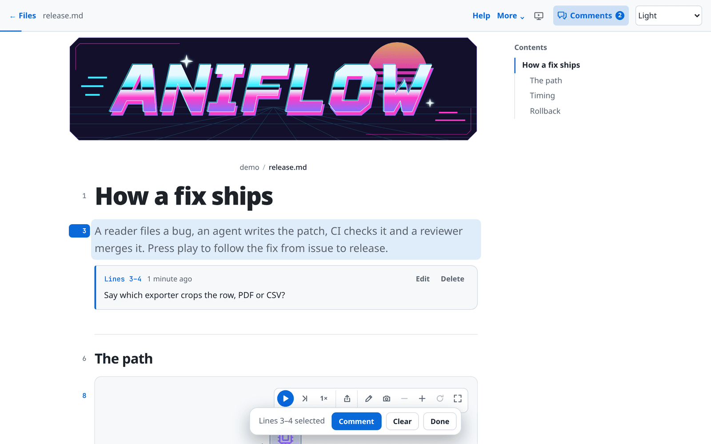
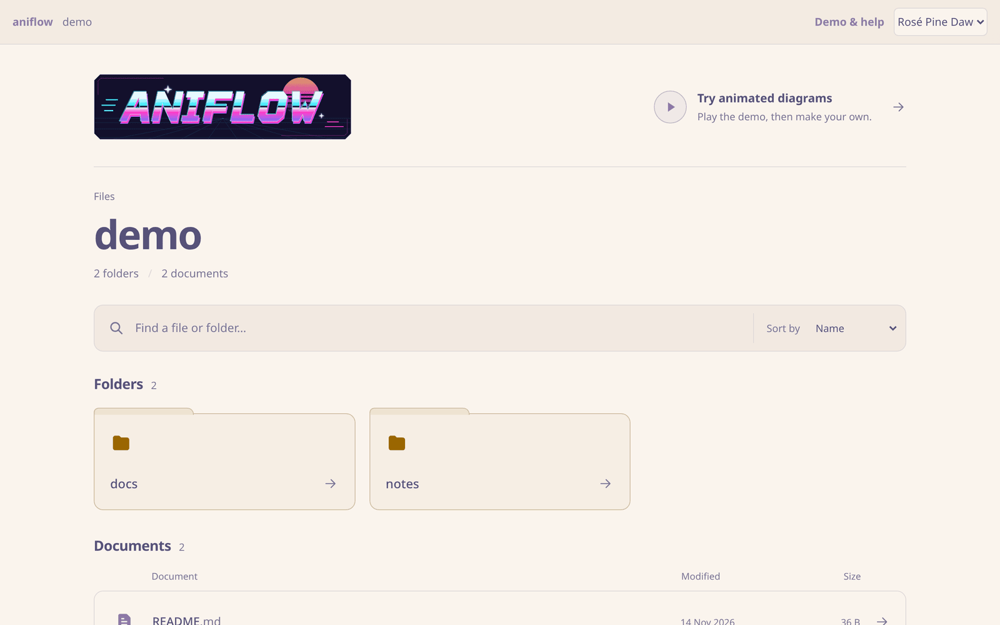

Opens the folder you are in
Run aniflow in a directory of notes or docs and open the address it prints. Links and pictures between your files work as they do on GitHub. It only reads: nothing in the folder is ever written.
Write your slides in Markdown, add your logo, and present in the browser. Bring Mermaid diagrams to life as walkthroughs, or browse your documents locally.
Run aniflow in a directory of notes or docs and open the address it prints. Links and pictures between your files work as they do on GitHub. It only reads: nothing in the folder is ever written.
Step forward and back with the arrow keys, slow it down, or let the view follow the box that is talking. One diagram can tell more than one story, say the normal path and the rollback.
Click a box to dim everything it doesn't touch. On a call, draw over the diagram with the pen or wave the laser pointer around.
The browser records the walkthrough itself, so you can drop it in a pull request or a chat without screen capture tools.
Press Present and every section becomes a slide. Space steps through the diagram; the left and right arrows change slides.
There are icons for agents, databases, pipelines, pods and reviewers. Put one in a box with img: "/icons/agent.svg", and aniflow --spec lists the names.
This is the source of the diagram at the top of this page. Everything above the blank line is plain Mermaid. The %% lines under it are comments to Mermaid, so GitHub and your editor still draw an ordinary diagram and ignore the story.
Each %% A -> B line sends the dot along one arrow. The words after the colon ride on the dot, and the text after the bar shows up as a caption under the diagram.
%% play: Title | starts a story |
|---|---|
%% A -> B : tag | text | moves the dot, with a tag and a caption |
%% A -> B, C | sends two dots at once |
%% skip A B | fades boxes this story doesn't use |
%% wait 1500 | holds the picture for a second and a half |
You can try one in your browser. The rest is in the walkthrough presentation, or run aniflow --spec.
```mermaid flowchart LR I@{ img: "/icons/issue.svg", label: "Issue" } A@{ img: "/icons/agent.svg", label: "Agent" } M@{ img: "/icons/model.svg", label: "Model" } P@{ img: "/icons/pipeline.svg", label: "CI" } R@{ img: "/icons/reviewer.svg", label: "Review" } S@{ img: "/icons/release.svg", label: "Release" } I --> A A <--> M A --> P --> R --> S %% play: Ship a fix %% I -> A : #42 | A reader reports that exports crop the last row. %% A -> M : prompt | The agent asks the model for a patch. %% M -> A : diff | The model answers with a two-line fix. %% A -> P : PR | The agent opens a pull request and CI runs the tests. %% P -> R : green | Every check passes, so a reviewer takes a look. %% R -> S : merge | The fix is merged and goes out in the next release. %% wait 1500 ```
Choose a style, add a logo and write your talk. Each ## heading starts a slide; Space walks through a diagram and the left and right arrows turn the page.
Present with speaker notes, or export your slides to PDF or PNG.
Browse presentation templates
Plans and reports from coding agents usually arrive as Markdown, so aniflow lets you answer back: pick a few lines, or a box or an arrow in a diagram, and leave a comment. The diagram's comment panel then copies them to the clipboard with the file name, the line and the text each one is about, ready to paste into Claude Code, Copilot or Codex.
Comments live in aniflow's cache folder, never in your Markdown.
To get the agent to draw walkthroughs in the first place, point it at aniflow --spec, which prints the syntax and the icon names, or install the aniflow-diagrams skill.
The reader is also a JavaScript library with no build step: one script that defines Aniflow, an ES module if you prefer, and a stylesheet. Give it some Markdown and an element, and you get the same rendering, contents rail, slides and diagram player as the command. The diagram at the top of this page runs this way.
If your app has its own server, the Python package has the pieces for it: comment storage, the page shell with its security headers, and the themes.
<!-- markdown-it, its footnote and emoji plugins and DOMPurify go first -->
<article class="markdown-body"></article>
<script src="aniflow.min.js"></script>
<script>
Aniflow.reader({
source: '# Hello\n\nSome *markdown*.',
mermaid: 'mermaid.min.js',
});
</script>
You need Python 3.12 or newer and uv. There is nothing else to install. uvx tries it once, uv tool install keeps the command around.
It starts on a free port, prints the address and lists the folder. Open Demo & help there for a tour that plays every feature.
# try it in the current folder uvx --from git+https://github.com/chmouel/aniflow aniflow # or install the command uv tool install git+https://github.com/chmouel/aniflow # serve another folder on a fixed port aniflow ./docs --port 8080
